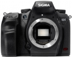

器材库 > APS及其以下画幅可换镜头数码相机 > SD1 Merrill

规格总览
产品类型
APS画幅可换镜头数码相机
发布日期
2012-02-08
厂家推荐价格
3,300.00 （美元）
影像规格
影像传感器
Foveon X3
影像传感器尺寸
23.5x15.7mm
总像素
4800万
有效像素
4600万
影像处理器
双TRUE II（Three-layer Responsive Ultimate Engine）影像处理芯片
静态图像尺寸
RAW：4704x3136x3、3264x2176x3、2336x1568x3；JPEG:4704x3136、3264x2176、2336x1568
静态图像格式
JPEG, RAW
画幅比
3:2
镜头和对焦
镜头卡口
Sigma SA
兼容镜头
Sigma SA卡口镜头
对焦系统类型
TTL相位检测
对焦点
11点
对焦模式
S-AF / C-AF / MF
自动对焦点选择
自动, 手动
所选自动对焦点显示
显示于取景器内
手动对焦
支持
曝光控制
快门速度
1/8000 - 30秒
ISO感光度
100, 200, 800, 1600, 3200, 6400, 自动
白平衡
日光, 闪光灯, 阴天, 自定义, 阴影, 自动, 钨丝灯, 白日光色FL
闪光灯
内置闪光灯
弹出式
闪光指数
GN 11
闪光补偿
±3EV以1/3EV级调整
取景器/显示屏
取景器
五棱镜取景器
取景范围
98%
取景放大倍率
0.95倍
屈光度调节范围
-3.0 ~ +1.5
反光镜
快速瞬回半透明
景深预视
有
LCD类型
彩色TFT LCD
LCD尺寸
3.0英寸
LCD像素
46万
视野率
100%
文件输入/输出
存储卡
CF
机身规格
材质
镁合金
颜色
黑色
尺寸
145.5X113.5X80.0mm
重量
700g
其它
配件端口
热靴
备注
全天候防尘防水
该产品暂无存档的网友点评
产品图 / 样片
评测 / 相关文章
- 详细内容 （存档）
- ［试用］SD1M，更清晰的视界 （原站已下线）
- ［试用］王者新生：SD1 Merrill x 18-200mm DC （存档）
- ［试用］王者新生SD1M+18-200C试用报告 （存档）
- ［资讯］SIGMA Photo Pro 5.4.1软件提供下载 （存档）
- ［资讯］经典“Foveon蓝”再现 适马SPP海外测试 （存档）
- ［资讯］适马SPP更新至5.4版本 （存档）
- ［资讯］适马公布SD1 Merrill/SD1最新固件 （存档）
- ［资讯］适马SD1、SD1M固件再次升级 （存档）
- ［资讯］适马发布SIGMA Photo Pro 5.3.1 （存档）
- ［资讯］适马再次升级SD1和SD1 Merrill固件 （存档）
相关文章
- ［试用］SD1M，更清晰的视界 （原站已下线）
- ［试用］王者新生：SD1 Merrill x 18-200mm DC （存档）
- ［试用］王者新生SD1M+18-200C试用报告 （存档）
- ［资讯］SIGMA Photo Pro 5.4.1软件提供下载 （存档）
- ［资讯］经典“Foveon蓝”再现 适马SPP海外测试 （存档）
- ［资讯］适马SPP更新至5.4版本 （存档）
- ［资讯］适马公布SD1 Merrill/SD1最新固件 （存档）
- ［资讯］适马SD1、SD1M固件再次升级 （存档）
- ［资讯］适马发布SIGMA Photo Pro 5.3.1 （存档）
- ［资讯］适马再次升级SD1和SD1 Merrill固件 （存档）